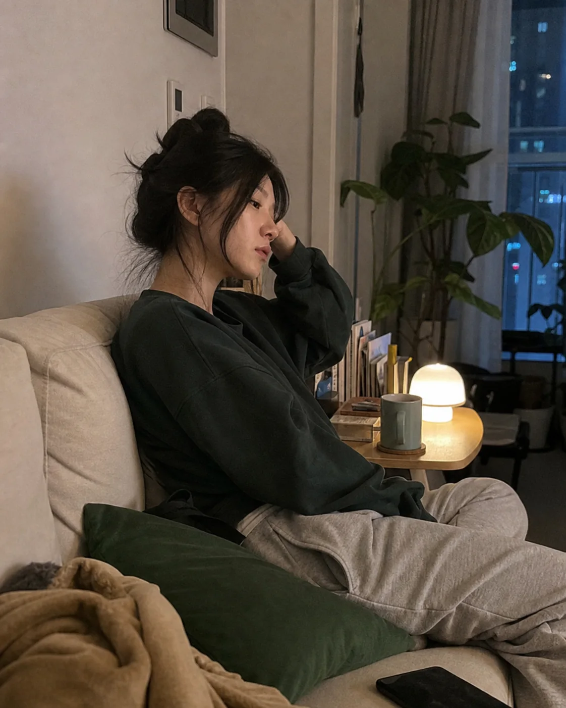
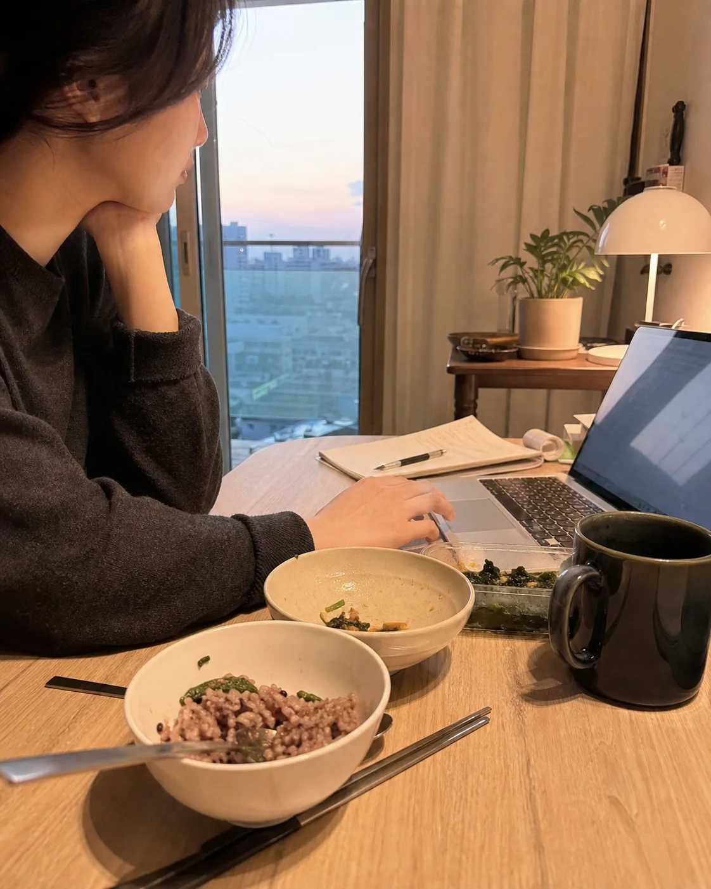

01
식욕
왜 저녁만 되면 식욕이 더 커질까요?
식사 간격과 허기가 커지는 시간, 야식이나 폭식이 반복되는 상황을 함께 확인합니다. 식욕을 의지의 문제로만 보지 않고 하루의 식사 흐름과 생활 리듬 속에서 살펴봅니다.
DEAR DIET PROGRAM
식욕과 수면, 소화와 부종, 배변과 생활 리듬까지.
현재 상태를 함께 살펴 체중관리의 방향을 정합니다.
A DIFFERENT BEGINNING
의지가 부족해서라고
단정하기 전에,
지금의 몸과 생활을
먼저 살펴볼 필요가 있습니다.
같은 체중이라도 변화가 어려웠던 이유와
이어갈 수 있는 방법은 서로 다르니까요.
WHAT WE OBSERVE
왜 저녁만 되면 식욕이 더 커질까요?
식사 간격과 허기가 커지는 시간, 야식이나 폭식이 반복되는 상황을 함께 확인합니다. 식욕을 의지의 문제로만 보지 않고 하루의 식사 흐름과 생활 리듬 속에서 살펴봅니다.
충분히 잤는데도 계속 피곤하신가요?
총 수면시간만 묻는 것이 아니라 잠들기까지 걸리는 시간, 중간 각성, 기상 후 회복감과 낮 동안의 컨디션을 함께 확인합니다. 필요한 경우 자율신경기능 관련 측정자료를 참고해 수면과 회복 상태를 함께 살펴봅니다.
조금만 먹어도 속이 더부룩한 날이 있나요?
식후 더부룩함이나 불편감이 언제 나타나는지, 어떤 음식이나 식사량에서 반복되는지를 살펴봅니다. 식욕과 섭취량만 따로 보지 않고 소화 상태와 식사 패턴을 함께 확인합니다.
아침과 저녁, 붓는 느낌이 달라지시나요?
얼굴이나 손발이 붓는 시간대와 반복 양상, 생활 중 체감되는 변화를 함께 확인합니다. 체중계의 숫자만으로 현재 상태를 판단하지 않습니다. 필요한 경우 체성분과 체수분 관련 측정자료를 함께 참고합니다. 측정값 하나만으로 부종의 원인을 판단하지 않습니다.
화장실 가는 리듬이 자주 달라지시나요?
배변 횟수뿐 아니라 평소와 달라진 양상, 배변 시 불편감과 식사 전후의 변화를 확인합니다. 배변 상태도 식사·수면·생활 리듬과 분리하지 않고 함께 살펴봅니다.
일정이 무너지면 식사와 컨디션도 함께 흔들리시나요?
식사 시간, 활동량, 휴식과 수면이 하루와 일주일 안에서 어떻게 반복되는지 확인합니다. 한 시점의 체중보다 반복되는 생활의 흐름을 함께 살펴 진료 방향을 정하는 데 참고합니다.

WHY I MADE BE DEER
수년간 몸을 움직이는 방법을 공부해왔고,
먹는 즐거움이 삶에 주는 위로도
너무 잘 알고 있습니다.
아시겠지만,
좋아하는 것을 계속 포기해야만 하는 다이어트는
오래 이어지기 어렵습니다.
무조건 억누르고 참기보다,
내 몸을 이해하며 꾸준히 달라질 수 있는 방법을
함께 찾겠습니다.
THE BE DEER FLOW
현재의 고민과 체중 변화,
이전 체중관리 경험을 확인합니다.
식욕·수면·소화·배변·부종과
생활 패턴까지 함께 문진합니다.
문진 내용과 현재 몸 상태를 함께 살펴봅니다.
체성분 등 기본 측정과, 필요한 경우 추가 측정자료를 진료 판단에 참고합니다.
확인한 내용을 바탕으로 현재 상태에 맞는 진료 방향을 정합니다.
한약을 포함한 치료와 생활 관리의 범위는 진찰 후 개별적으로 결정합니다.
체중 변화만 기록하지 않습니다.
식욕·수면·소화와 컨디션, 생활의 변화까지 다시 확인해 이후 진료에 반영합니다.
REAL RECEIPT REVIEWS
실제 디어한의원 NAVER 플레이스에 남겨진 리뷰들입니다.

“원장선생님이 운동 이야기에 진심으로 반응하는 게 느껴질 때가 있다.”
운동처방과 근육학, 요가와 필라테스를 공부해 온 한의사가 몸의 움직임까지 함께 살핍니다.

“방문할 때마다 제 몸 상태를 꼼꼼하게 체크해 주세요.”
한 번 정한 계획을 그대로 밀어붙이기보다, 진료를 통해 현재 상태와 변화를 확인합니다.

“어려울 때마다 조언도 해주셔서 계속 다니고 있어요.”
몸의 변화뿐 아니라 실제 생활에서 막히는 순간도 편하게 이야기할 수 있도록.

“환자를 대하실 때 진심이 느껴져서 믿음이 갑니다.”
진료실에서 나누는 설명과 태도까지, 한 사람의 과정을 함께 만드는 부분이라고 생각합니다.
후기로 확인되는 BE DEER 체중관리
실제 후기에서 확인된 변화는 특별한 몇 사람의 이야기가 아니라,
식사·수면·생활 리듬이 흔들리는 일상 속에서 시작되는 경우가 많습니다.

체중은 줄어도 식사와 생활 리듬이 다시 무너지며 비슷한 감량과 회복을 반복하는 경우
특정 시간대의 허기, 야식이나 폭식이 반복되어 혼자서 식사 흐름을 조절하기 어려운 경우
수면, 소화, 배변, 부종 같은 불편이 함께 느껴져 체중만으로는 설명되지 않는 경우
식사 시간, 수면, 활동량이 일정하지 않아 체중관리의 방향을 잡기 어려운 경우
체중 숫자만 줄이는 방식보다 지금의 몸과 생활을 함께 살펴보고 싶은 경우
단기간 감량보다 현재 생활 안에서 지속할 수 있는 관리 방향이 필요한 경우

체중 숫자보다 먼저, 현재의 상태를 이야기해보세요.
사진은 일상의 장면을 재구성한 이미지이며, 실제 환자의 치료 사례가 아닙니다.
BEGIN WITH BE DEER
BE DEER는 체중만 확인하지 않습니다.
현재의 몸과 생활을 함께 살펴 진료 방향을 정합니다.
BE DEER 체중관리 · 김민지 대표원장 진료